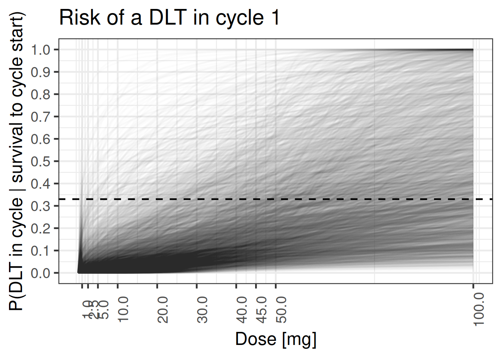
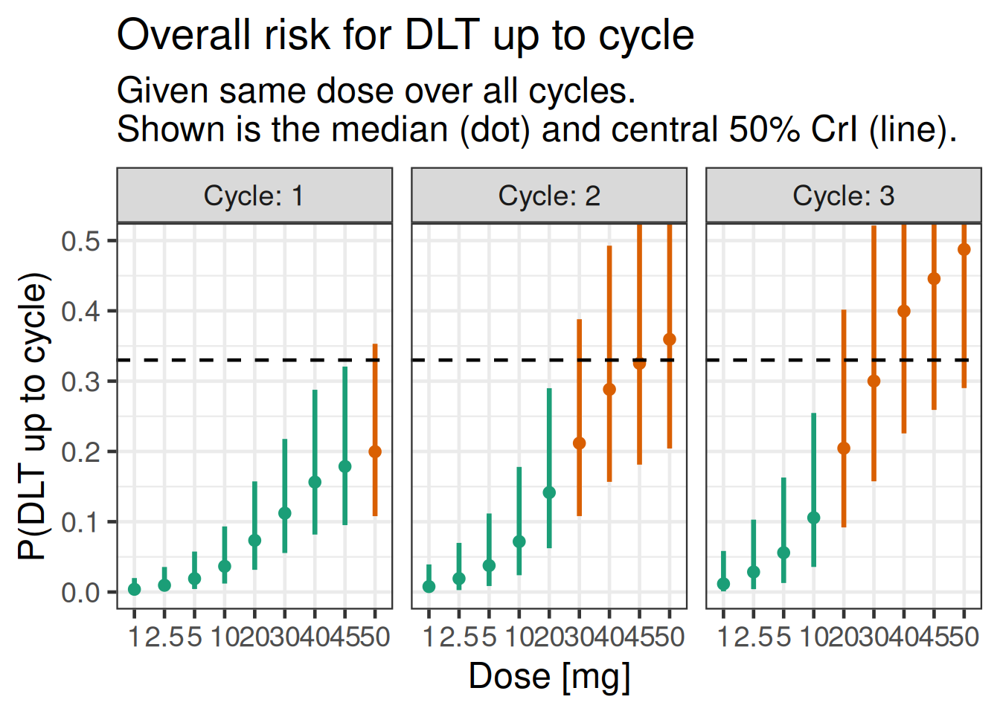
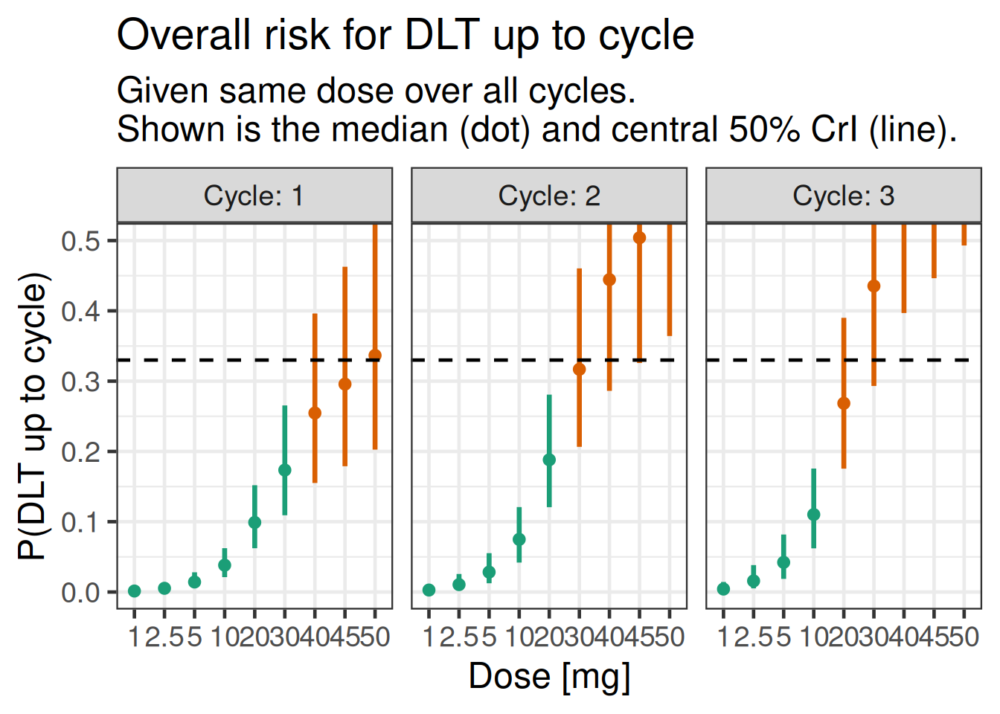

library(lubridate)
library(tibble)
library(dplyr)
library(tidyr)
library(brms)
library(bayesplot)
library(tidybayes)
library(posterior)
library(knitr)
library(ggplot2)
library(purrr)
library(here)
library(assertthat)
library(gt)
theme_set(theme_bw(12))
# instruct brms to use cmdstanr as backend and cache all Stan binaries
options(brms.backend="cmdstanr", cmdstanr_write_stan_file_dir=here("_brms-cache"))
# create cache directory if not yet available
dir.create(here("_brms-cache"), FALSE)
set.seed(8794567)
# Table formatting helper function:
gt_format <- function(x) {
x |> fmt_number(decimals=2) |>
opt_interactive(
page_size_default = 5,
use_text_wrapping = F,
use_compact_mode = T
)
}10 Time-to-event modelling in Oncology dose escalation
This case study demonstrates
- setting up a time-to-event model and prior with explicit modeling of a piecewise-constant log-hazard in
brmsusing Poisson regression - how this time-to-event model relates to the standard BLRM
- computing and visualizing conditional and cumulative event probabilities
- how to determine the impact of the Monte Carlo Standard Error (MCSE) on decision criteria, e.g., Escalation With Overdose Control (EWOC)
- in the exercise: setting up custom
brmslink functions for the two-drug case
10.1 Background
The aim of Oncology Phase-I trials is to identify a drug dose which is reasonable safe to use and efficacious at the same time. As cytotoxic drugs aim to kill cancer cells, it is expected that toxicity events are to some extent a surrogate for efficacy of the drug. Due to the life-threatening nature of the disease one thereby uses dose escalation trial designs to identify the maximum tolerated dose (MTD) or recommended dose (RD) rapidly. These trials enroll small patient cohorts at some drug dose and then assess at a dose escalation meeting (DEM) all safety events occurring over the time-course of a treatment cycle (often 4 weeks). The safety events classified as dose limiting toxicities (DLTs) then determine which dose levels are safe for use in the next patient cohort. In this way an increasing data set on the toxicity of the drug emerges as the trial continues.
There are many approaches on how to guide dose escalation trials at a DEM. Traditional designs such as the 3+3 design are based on algorithmic rules governing the decision for the subsequent cohort based on the outcome at the current dose. Specifically, 3 patients are enrolled onto a cohort and the drug dose is increased in case no DLT occurs, if 1 DLT occurs the drug dose is kept constant while it is decreased if more DLTs occur. Whenever two cohorts in sequence observe 1 out of 3, the 3+3 trial completes. This is in line with the goal of a 33% DLT rate at the MTD. It has been shown that these rule-based approaches have rather poor statistical properties and model based approaches have been proposed. In particular, Bayesian model-based designs have proven to provide greater flexibility and improved performance for estimating the MTD, while protecting patient safety. In the model-based paradigm for dose escalation, one develops a model for the dose-toxicity relationship. As DLT data accumulates on-study, the model is used to adaptively guide dose escalation decisions. Bayesian approaches are well-suited for this setting, due in part to the limited amount of available data (Phase-I studies are generally small).
Recent, more targeted treatments, have challenged several aspects taken for granted for traditional cytotoxic therapies, such as
- Estimating the MTD over just one treatment cycle: since targeted therapies are typically safer than cytotoxic ones and are applied over longer time periods, estimating longer-term (multi-cycle) dose-toxicity relationships has become more important. However, we typically do not want to wait for the full time period (e.g., 3 cycles) to decide the dose for the next cohort. That is, after the first cycle, one may want to extrapolate to the dose-toxicity relationship over 3 cycles given a prior on how the conditional toxicity of the next cycles changes with respect to the first one. However, this is not easily feasible with methods that only use binary (DLT yes/no) data.
- Constant dosing regimen: For some targeted treatments it may be advantageous to vary the dosing regimen, for instance, by performing within-patient dose-ramp-up over several weeks to avoid cytokine release syndrome. However, classical binary cycle-1 methods such as the 3+3, BOIN or the Bayesian Logistic Regression Model (BLRM) are not able to directly incorporate time-varying dosing or hazard reductions due to ramp-up dosing.
- Ignoring dropout: In classical binary dose-DLT methods, where DLT yes/no was measured for each patient over the first treatment cycle, data from patients that dropped out during this cycle (for instance due to disease progression) is typically ignored. This is no longer an option with modern cancer treatments in Phase I that are both taken over longer time periods where dropout is more likely, as well as administered in last-line treatment populations with aggressive cancers / rapid dropout due to disease progression.
These challenges can be addressed by switching to time-to-first-event (time-to-DLT) modeling with piecewise-constant hazards, where the constant period is chosen to align with a period of interest. For instance, if the dose-toxicity relationship over 3 cycles is of interest, one might choose to model piecewise-constant hazards per cycle, or if we are interested in the dose-toxicity relationship of several regimens that contain within-patient ramp-up of dosing on a weekly basis, we might choose piecewise-constant hazards for each week.
10.2 Required libraries
To run the R code of this section please ensure to load these libraries and options first:
10.3 Example trial
In the following, we will assume a simple setting of a first-in-human (FIH) study of a new Oncology treatment. Here, we consider the dose-DLT relationship over a time horizon of 3 treatment cycles, a cycle length of 4 weeks, and daily (QD) dosing of a drug A at a pre-defined dose set with reference dose \(\tilde{d} = 50\) (at the reference dose we anticipate the MTD a priori):
cycle_lengths <- rep(weeks(4), 3)
dref_A <- 50
doses <- c(1, 2.5, 5, 10, 20, 30, 40, 45, 50)
cycle_seq <- seq_along(cycle_lengths)
dose_seq <- seq_along(doses)We will use the logarithm of the normalized dose (with respect to a reference dose \(\tilde{d}\) ), \(\log\left(\tilde{d}_{j}\right) =
\log\left(d_{j} / \tilde{d}\right)\), where \(j\) is the cycle index. We define a helper function to add this column as std_A, and whether the log-dose is finite as finite_A, which will become relevant in the case of drug combinations.
add_std_dose_col <- function(dose_info, drug = "A", dref) {
dose_info |> mutate(
"std_{drug}" := log(get(paste0("dose_", drug)) / dref),
"finite_{drug}" := 1L * (get(paste0("dose_", drug)) != 0)
)
}10.4 Data
We now need individual patient data (IPD) containing:
- The doses planned to be administered in each of the three cycles,
- The start and end dates of each cycle
- The date of censoring (either at the end of the last cycle due to end of the observation period, or during the trial due to dropout)
- The date of DLT
As an example, we create 3-cycle data in long format reflecting the data used in the BLRM dose escalation case study:
# Create a single patient
example_ipd <- tibble(
cycle_index = cycle_seq,
dose_A = 1,
num_toxicities = 0,
follow_up = as.numeric(cycle_lengths, "days")
)
# Create long-format individual-patient data (IPD) corresponding to the one
# in the BLRM dose escalation case study
ipd <- bind_rows(
example_ipd |> slice(rep(row_number(), 3)),
example_ipd |> mutate(dose_A = 2.5) |> slice(rep(row_number(), 4)),
example_ipd |> mutate(dose_A = 5) |> slice(rep(row_number(), 5)),
example_ipd |> mutate(dose_A = 10) |> slice(rep(row_number(), 4)),
example_ipd |> mutate(dose_A = 25, num_toxicities = 1) |> slice(rep(1, 2))
) |> add_std_dose_col(drug = "A", dref = dref_A)
ipd |> gt() |> gt_format()We define dosing schedules that we want to compute DLT probabilities for. Here, we choose schedules that are constant over all three cycles:
# Dosing information per cycle
dose_info_long <- expand_grid(schedule_id = dose_seq, cycle = cycle_seq) |>
mutate(dose_A = doses[schedule_id])
# Cycle information
cycle_info <- tibble(
cycle = cycle_seq,
follow_up = as.numeric(cycle_lengths, "days")
)<<<<<<< HEAD We also generate a reference dosing data set which is formatted like an analysis data set, but is only setup to evaluate the final model on the predefined set of doses. These will be needed to compute the conditional (or cumulative) DLT probabilities in (up to) cycles 1, 2 and 3: =======
We also generate a reference dosing data set which is formatted like an analysis data set, but is only setup to evaluate the final model on the predefined set of doses. These will be needed to compute the conditional (or cumulative) DLT probabilities in (up to) cycles 1, 2 and 3: >>>>>>> origin/develop
dose_ref_data <- dose_info_long |>
left_join(cycle_info, by="cycle") |>
mutate(num_toxicities=0L) |>
add_std_dose_col(drug = "A", dref = dref_A)10.5 Model description
For each cycle \(j\), we model the probability of observing a DLT event conditional on entering cycle \(j\) as a function of the dose \(d_{j}\) being administered during this cycle.
For each patient \(i \in {1, \ldots, N}\), we observe either the DLT event time \(T_i\) or the censoring time \(C_i\), whichever occurs first. We denote this as
\[ (U_i, \delta_i), \textrm{ where } U_i = \min(T_i, C_i) \textrm{ and } \delta_i = 1(T_i \leq C_i). \]
Here, \(U_i\) represents the observed time, and \(\delta_i\) indicates whether a DLT occurred \((\delta_i = 1)\) or not (\(\delta_i = 0)\).
The primary focus of the model is the risk for DLT events over the course of a sequence of cycles. Thus, we do not aim to model accurately the risk for an event within each cycle. While one could model the event and censoring times as interval censored observations, we disregard here the interval censoring and use a continuous time representation of the time to event process. The continuous time representation can be understood as an approximation of the interval censored process with time lapsing in full units of a cycle. As a consequence, the observed event time \(T_i\) and censoring times \(C_i\) are always recorded at the planned cycle completion time-point (time lapses in units of cycles). Here we assume for simplicity that each cycle \(j\) has the same duration \(\Delta t\) such that any time being recorded is a multiple of \(\Delta t\) and we denote time \(t\) being during a cycle \(j\) with \(t \in ((j-1) \, \Delta t, j \, \Delta t]\) or equivalently \(t \in I_j\) for brevity.
10.5.1 Model definition
To define our model, we use the following basic definitions from survival analysis. The survival function \(S(t)\) and cumulative event probability \(F(t)\) are defined as
\[\begin{align*} S(t) := & \Pr(\textrm{"No event up to time t"}) = \Pr(T \geq t) = 1 - F(t). \end{align*}\]
We now have two quantities that are of particular interest:
The cumulative DLT probability up to cycle \(j\) given a prescribed dosing \(\boldsymbol{d} = (d_{1}, d_{2}, d_{3})\) over the three cycles: \[\Pr(\textrm{"DLT up to cycle j"}|\boldsymbol{d}) = F(t).\]
The conditional DLT probability of cycle \(j\) given survival up to cycle \(j-1\) (i.e., not having observed a DLT event up to the end of cycle \(j-1\)): \[\begin{align*} \, & \Pr(\textrm{"DLT in cycle j"}|\textrm{"No DLT up to cycle j-1"}, d_j) \\ = \, & \Pr(T \leq t + \Delta t|T > t, d_j)\\ = \, & 1 - \exp\left(-\int_{t}^{t + \Delta t} h(u) du \right), \end{align*}\] where \(h(u)\) is the hazard function and \(H(t) = \int_{0}^{t} h(u) du\) the cumulative hazard.
Given the drug dose \(d_{j}\) administered in cycle \(j\), we model the log-hazard \(\log(h_j(t|\tilde{d}_{j}))\) as \[ \log(h_j(t|\tilde{d}_{j})) = \alpha + \beta \log\left(\tilde{d}_{j}\right), \textrm{ where } \tilde{d}_{j} = \frac{d_{j}}{\tilde{d}} \] and \(\tilde{d}\) is the reference dose. Then (see Section 10.10 for the full derivation), the conditional DLT probability is closely related to the classic two-parameter Bayesian Logistic Regression Model (BLRM), since
\[\begin{align} \mathrm{cloglog}\Pr(T \leq t + \Delta t|T > t, d_j) & = \alpha + \beta \log\left(\tilde{d}_{j}\right) + \log(\Delta t), \end{align}\]
is the same as for the BLRM in cycle one if we elapse time in cycles (then \(\Delta t = 1\) and the \(\log(\Delta t)\) is zero), except for the link function changing from \(\mathrm{logit}\) to \(\mathrm{cloglog}(x) = \log(-\log(1 - x))\).
The cumulative DLT probability can also be derived, where \(j_t\) is the index of the cycle that time \(t\) lies in:
\[\begin{align} \mathrm{cloglog}\Pr(T \leq t|\boldsymbol{d}) & = \log\left(\sum_{j = 1}^{j_t} \exp\left(\alpha + \beta \log\left(\tilde{d}_{j}\right) + \log(\Delta t)\right)\right) = \mathrm{cloglog} F(t|\boldsymbol{d}). \end{align}\]
Last, but not least, the likelihood for all patients \(i\) is then \[ L(U|\alpha, \beta) = \prod_i \underbrace{ f(T_i)^{\delta_i} }_\textrm{DLT events} \, \underbrace{S(C_i)^{1 - \delta_i}}_\textrm{Censoring event} \,. \] In order to fit these models to time to first event data it is helpful to consider its representation as a Poisson regression. Since \(f(t) = h(t) \, S(t)\) and \(S(t) = \exp\left(-H(t)\right)\) from basic survival analysis, it follows that the likelihood contribution in absence of an event is \(\exp(-H(t))\) while it is \(h(t) \, \exp(-H(t))\) whenever an event occurs.
The Poisson distribution for observing \(k\) events,
\[ \Pr(k|\lambda) = \frac{\lambda^k \, \exp(-\lambda)}{k!}, \]
becomes \(\exp(-\lambda)\) for no event (\(k=0\)) and \(\lambda \, \exp(-\lambda)\) for an event (\(k=1\)). Therefore, we can model the data using a Poisson regression approach whenever the hazard is constant over the time units we model, \(h(t) = \lambda\). In this case the counts on each time interval are \(0\) or \(1\). Moreover, we use a \(\log\) link function for the counting rate \(\lambda\) and model with a linear function the \(\log\) counting rate to ensure its positivity. Importantly, we also add to the linear predictor an offset equal to the \(\log\) of the exposure time \(\log(\Delta t)\). The offset multiplies \(\lambda\) with \(\Delta t\) and thereby turns the constant counting rate \(\lambda\) into a cumulative hazard \(H(t) = \lambda \, \Delta t\). Thereby we obtain the desired likelihood.
Note, that when using the Poisson approach in brms we pass the cumulative hazard \(\lambda \, \Delta t\) as argument to the counting rate such that the likelihood term for an event becomes \(\lambda \,
\Delta t \, \exp(-\lambda \, \Delta t)\), which is not quite equal to \(f(t)\) as required above, but is instead equal to \(\Delta t \,
f(t)\). However, as \(\Delta t\) is known it is merely a constant and is hence irrelevant for sampling the posterior.
10.5.2 Model prior
For the above model, we must define a prior for the parameters \(\alpha\) and \(\beta\). The interpretation of these parameters depends on two reference values, the reference dose \(\tilde{d}\) and reference time point \(\tilde{t}\).
The reference dose \(\tilde{d}\), with respect to which the dose is normalized, defines the meaning of the intercept parameter \(\alpha\). Here we choose to define the meaning of the intercept by considering the reference time point \(\tilde{t}\) such that for \(d=\tilde{d}\) and \(t=\tilde{t}\) we have that
\[ \mathrm{cloglog}\Pr(T \leq \tilde{t}|\tilde{d}) = \alpha + \log(\tilde{t}). \]
Hence, when setting the mean of \(\alpha\) to \(\mathrm{cloglog}^{-1}(\tilde{\pi}) - \log(\tilde{t})\) it becomes apparent that the intercept is equal to the rate of events \(\tilde{\pi}\) over the reference time period up to the reference time point \(\tilde{t}\) whenever dose \(\tilde{d}\) is given.
If we are interested in modeling treatment cycles, we might let the time unit elapse in full cycles and set the reference time point to the end of cycle 1 (\(\tilde{t} = 1\)). Then, the interpretation of the prior is the same as for the classic BLRM for which the DLT probability over one cycle is modeled as a binomial logistic regression (\(\mathrm{logit}(\pi(d)) = \alpha + \beta \, \log(d/\tilde{d})\)). The only difference is that the link function is now \(\mathrm{cloglog}\) instead of \(\mathrm{logit}\).
Given the similarity of the Poisson TTE model to the one cycle focused BLRM we will use the same rational for the slope parameter \(\beta\). The slope parameter \(\beta\) can be interpreted as the Hill coefficient of a sigmoid logistic curve. We can hence use mechanistic knowledge and prior in vivo and in vitro data to motivate its feasible range of values, and condense this prior knowledge into an appropriate prior for the slope. In an efficacy meta-analysis, “modeling showed the Hill parameters were concentrated near 1.0”, see
- Thomas et al. (2014) doi:10.1080/19466315.2014.924876,
- Bayesian Methods in Pharmaceutical Research (2020) doi:10.1201/9781315180212 and
- Thomas et al. (2017) doi:10.1080/19466315.2016.1256229 for details.
Therefore, in the absence of more specific knowledge (e.g. pre-clinical data, historical clinical data for the mechanism of action, etc.) we assume a prior for \(\log\left(\beta\right)\) with mean 0. Furthermore, we wish to avoid extremely steep or flat dose-response curves. Thereby, we parameterize the 95% central credible interval to allow for a 4 fold increase or decrease via setting
\[ \log\left(\beta\right) \sim \mbox{Normal}\left(0, \left(\frac{\log(4)}{1.96}\right)^2\right).\]
As discussed above, the intercept \(\alpha\) defines the reference event rate \(\tilde{\pi}\) at the reference dose \(\tilde{t}\) over the time span up to the reference time \(\tilde{t}\). By setting \(\tilde{\pi}\) to 20% we imply that the reference dose \(\tilde{d}\) corresponds to our prior guess of the MTD. These considerations define the prior mean for \(\alpha\). The standard deviation for the intercept is set to unity. This choice results from an extensive study of the model properties under various data scenarios. These data scenarios studied how the model guides a dose-escalation trial at an early stage. At an early stage of the trial one requires sufficient conservative dose recommendations from the safety model while at the same time one wishes to ensure that the model allows the trial to continue enrolling patients to low doses should a limited number of DLT events be observed during the early cohorts. The rationale behind the prior of
\[ \alpha \sim \mbox{Normal}\left(\mathrm{cloglog}(\tilde{\pi} = 20\%) - \log\left(\tilde{t}\right), 1^2\right) \]
is that we have some level of confidence in the set of doses which we study in the trial to be reasonable. That is, the fact that we choose to study a concrete dose range is by itself prior knowledge driven by a multitude of (pre-clinical & clinical) considerations. This prior choice deliberately avoids that a limited number of DLT events at the start of the trial can entirely undermine our initial understanding of the drug safety profile. Only with sufficient data the model will stop a trial.
For a better intuition of the model prior, it is a helpful to study data scenarios (left out here) and to visualize the joint model prior rather than considering the prior on each parameter individually. This is covered in section Section 10.6.3.
10.6 Implementation
For the case of a single agent trial we can cast the problem into a Poisson regression framework as detailed above and define the brms model formula as follows. We use here a non-linear model formla syntax to enforce a positive slope:
tte_model <-
bf(num_toxicities | rate(follow_up) ~ interA + exp(slopeA) * std_A,
interA ~ 1,
slopeA ~ 1,
nl=TRUE, family=poisson()
)brms helps us to get the list of model parameters requiring prior specifications:
get_prior(tte_model, data = ipd) prior class coef group resp dpar nlpar lb ub source
(flat) b interA default
(flat) b Intercept interA (vectorized)
(flat) b slopeA default
(flat) b Intercept slopeA (vectorized)We can for instance define a prior with 20% DLT probability after the first treatment cycle at the reference dose. For more details on the \(\beta\) parameter prior, see the bite-size guidance on go/BLRM.
## -4.83 approx cloglog(0.2) - log(7*4) for drug A
tte_prior <-
prior(normal(-4.83, 1), nlpar=interA, class=b, coef=Intercept) +
prior(normal(0, log(4)/1.96), nlpar=slopeA)We then create the Stan model code
tte_stanmodel <- tte_model |> make_stancode(
data = ipd, prior = tte_prior
)and data:
tte_standata <- tte_model |> make_standata(
data = ipd, prior = tte_prior
)After inspecting the generated code and data for correctness, we compile the model without sampling it (chains = 0) yet:
tte_brms_model <- tte_model |> brm(
data = ipd, prior = tte_prior, chains = 0, silent = 2
)10.6.1 Computing conditional and cumulative DLT probabilities for a given dosing schedule
We define a function to compute the conditional and cumulative DLT probabilities over a given schedule, respectively. This function needs to take the hazards for each piecewise-constant interval and compute the respective DLT probability. We write the function in the same logic as the add_*_rvars functions from tidybayes such that we can easily complement analysis data sets with the probabilities of interest:
add_risk_rvars <- function(newdata, model, time, .by) {
## P(T =< t) = 1 - P(T > t) = inv_cloglog(log(H(t)))
## <=> P(T =< t) = 1 - P(T > t) = inv_clog(H(t))
## inv_cloglog(cll) = 1 - exp(-exp(cll))
## => inv_clog = 1 - exp(-cl)
inv_clog <- function(cl) { 1 - exp(-cl) }
## data must be sorted by time to ensure that the cumulative sum
## works correctly below
time_order <- order(pull(newdata, {{.by}}), pull(newdata, {{time}}))
orig_order <- seq_len(nrow(newdata))[time_order]
riskdata <- newdata[time_order,]
H <- rvar(posterior_epred(model,
newdata=riskdata,
allow_new_levels=TRUE,
sample_new_levels="gaussian"))
riskdata <- mutate(riskdata,
prob=inv_clog(cumsum(H[cur_group_rows()])),
cprob=inv_clog(H[cur_group_rows()]),
.by={{.by}})
riskdata[orig_order,]
}10.6.2 Dose escalation decisions
As in the basic dose-escalation chapter, we will apply Escalation With Overdose Control (EWOC). I.e., we define a threshold above which doses are “excessively toxic†\(\pi_{over}\) (typically \(\pi_{over} = 33\%\)), and a so-called feasibility bound \(c\) (typically \(c = 25\%\)):
\[ \text{EWOC satisfied at }d \iff \Pr( \pi(d) > \pi_{over}) \leq c \] Furthermore, we often define another cutoff \(\pi_{targ}\), and summarize the posterior probabilities for three intervals,
\[\begin{align*} \Pr(d\text{ is an underdose}) &= \Pr( \pi(d) < \pi_{targ} ) \\ \Pr(d\text{ is in the target range}) &= \Pr( \pi_{targ} \leq \pi(d) < \pi_{over} ) \\ \Pr(d\text{ is an overdose}) &= \Pr( \pi(d) > \pi_{over} ), \end{align*}\]
and evaluate EWOC by checking if the last quantity exceeds \(c\).
For the set of MCMC draws, we can compute median, mean, sd, 25% and 75% quantiles, the interval probability as well as the EWOC criteria using the summarize_draws function from the posterior package. Especially for the EWOC metric, we also would like to know if there are any pre-specified doses where the Monte Carlo Error could flip the decision whether a dose is considered safe enough (or not).
We test for this using a Z-test (one-sample location test) for the 75% quantile and its distance from the critical threshold \(\pi_{over}\) using the Monte-Carlo Standard Error (MCSE) for the 75% quantile (mcse_q75). We define the EWOC metric to be sufficiently accurate if the probability of flipping the decision due insufficient accuracy (and hence large MCSE) is smaller than 2.5% certainty on whatever side of the decision threshold. In turn we are at least 97.5% certain that the decision is robust wrt to fluctuations implied by MCMC sampling variability. Here we assume that the statistic is normally distributed:
summarize_probs <- function(draws) {
summarize_draws(
draws,
median, mean, sd,
~quantile2(.x, probs = c(0.25, 0.75)),
~prop.table(table(cut(.x, breaks = c(0, 0.16, 0.33, 1)))),
~mcse_quantile(.x, probs = 0.75),
default_convergence_measures()
) |> mutate(
ewoc_ok = q75 < 0.33,
stat = (q75 - .33) / mcse_q75,
ewoc_accurate = abs(stat) >= qnorm(0.975)
) |> select(-variable)
}To inspect the prior, we first sample the model ignoring the data:
tte_model_prioronly <- update(tte_brms_model, chains = 4, sample_prior = "only") Now we can compute the conditional and cumulative DLT probabilities implied by the prior,
prior_risk <- dose_ref_data |>
add_risk_rvars(tte_model_prioronly, cycle, schedule_id)and display them as a table, i.e., the conditional DLT probabilities
prior_risk |>
mutate(summarize_probs(cprob)) |>
select(-num_toxicities, -std_A, -prob, -cprob) |>
gt() |> gt_format()as well the cumulative probabilities
prior_risk |>
mutate(summarize_probs(prob)) |>
select(-num_toxicities, -std_A, -prob, -cprob) |>
gt() |> gt_format()10.6.3 Visualizing the model prior
We can also visualize the prior in terms of the sampled curves, and see whether this distribution makes sense to us. We can, e.g., see, that the prior we defined above is quite sensible in terms of the dose-response curves it implies:
10.6.3.1 Conditional DLT probability in cycle 1
Show the code
add_plot_cols <- function(data) {
data |> mutate(
EWOC = factor(ewoc_ok, c(TRUE, FALSE), c("OK", "Not OK")),
dose_A = factor(dose_A),
Cycle = cycle
)
}
doses_dense <- seq(0, 2*dref_A, length.out = 100 + 1)
dose_info_dense <- expand_grid(
schedule_id = seq_along(doses_dense),
cycle = cycle_seq
) |>
mutate(dose_A = doses_dense[schedule_id])
dose_ref_data_dense <- dose_info_dense |>
left_join(cycle_info, by="cycle") |>
mutate(num_toxicities=0L) |>
add_std_dose_col(drug = "A", dref = dref_A)
plot_cycle1_dist <- function(model, schedules, doses) {
plot_data <- schedules |>
add_risk_rvars(model, cycle, schedule_id) |>
mutate(summarize_probs(cprob)) |>
filter(cycle == 1)
plot_data_long <- plot_data |>
select(dose_A, cprob) |>
unnest_rvars()
plot_data_long |>
ggplot(aes(dose_A, y = cprob, group = .draw)) +
geom_line( alpha=0.01) +
scale_x_continuous(breaks = doses) +
scale_y_continuous(breaks = seq(0, 1, by = 0.1)) +
hline_at(0.33, linetype = I(2)) +
ggtitle(
"Risk of a DLT in cycle 1"
) +
xlab("Dose [mg]") +
ylab("P(DLT in cycle | survival to cycle start)") +
theme(axis.text.x = element_text(angle = 90))
}
plot_cycle1_dist(tte_model_prioronly, dose_ref_data_dense, c(doses, 2*dref_A))
If one chooses a very wide prior on a parameter without considering the response scale, this can, result in priors that are not biologically justifiable. For instance, if we chose a much higher standard deviation for the prior of the slope \(\beta\), this leads to a prior is bimodal in the sense that it implies either flat dose-response curves or step functions at the reference dose (which is easier to overlook when only plotting the point intervals):
Show the code
tte_prior_wide <-
prior(normal(-4.83, 1), nlpar=interA, class=b, coef=Intercept) +
prior(normal(0, 3), nlpar=slopeA)
tte_brms_model_wide_prioronly <- tte_model |> brm(
data = ipd, prior = tte_prior_wide, silent = 2, sample_prior = "only"
)
plot_cycle1_dist(tte_brms_model_wide_prioronly, dose_ref_data_dense, c(doses, 2*dref_A))Nevertheless, it is easier to visualize the distributiom of the estimated dose-response curves for the pre-specified doses using the stat_pointinterval stat from the ggdist package:
10.6.3.2 Conditional DLT probability in each of the 3 cycles
plot_cprob <- function(model, schedules) {
schedules |>
add_risk_rvars(model, cycle, schedule_id) |>
mutate(summarize_probs(cprob)) |>
add_plot_cols() |>
ggplot(aes(dose_A, ydist = cprob, colour = EWOC)) +
facet_wrap(~Cycle, labeller = label_both) +
stat_pointinterval(.width = 0.5) +
scale_y_continuous(breaks = seq(0, 1, by = 0.1)) +
coord_cartesian(ylim = c(0, 0.5)) +
hline_at(0.33, linetype = I(2)) +
ggtitle(
"Conditional risk for one DLT per cycle",
"Risk is conditional on survival at the same dose up to cycle start.\nShown is the median (dot) and central 50% CrI (line)."
) +
xlab("Dose [mg]") +
ylab("P(DLT in cycle | survival to cycle start)")
}
plot_cprob(tte_model_prioronly, dose_ref_data)10.6.3.3 Cumulative DLT probability over 3 cycles
plot_prob <- function(model, schedules) {
schedules |>
add_risk_rvars(model, cycle, schedule_id) |>
mutate(summarize_probs(prob)) |>
add_plot_cols() |>
ggplot(aes(dose_A, ydist = prob, colour = EWOC)) +
stat_pointinterval(.width = 0.5) +
facet_wrap(~Cycle, labeller = label_both) +
scale_y_continuous(breaks = seq(0, 1, by = 0.1)) +
coord_cartesian(ylim = c(0, 0.5)) +
hline_at(0.33, linetype = I(2)) +
ggtitle(
"Overall risk for DLT up to cycle",
"Given same dose over all cycles.\nShown is the median (dot) and central 50% CrI (line)."
) +
xlab("Dose [mg]") +
ylab("P(DLT up to cycle)")
}
plot_prob(tte_model_prioronly, dose_ref_data) 
10.7 Examining the model posterior
We now sample the model including the data:
tte_model_posterior <- update(tte_brms_model, chains = 4)10.7.1 Inference for model parameters
It is simple to get summary statistics and graphical displays of the posterior distributions for the model parameters:
posterior_summary(tte_model_posterior) Estimate Est.Error Q2.5 Q97.5
b_interA_Intercept -4.2141036 0.8817048 -5.8656920 -2.438936
b_slopeA_Intercept 0.3359283 0.4634905 -0.6674834 1.147130
lprior -2.3972805 1.0369622 -5.3616400 -1.507926
lp__ -7.6912674 1.0165879 -10.4014250 -6.677724brms::mcmc_plot(tte_model_posterior, type = "dens", facet_args = list(ncol = 1))10.7.2 Inference for conditional and cumulative DLT probabilities
The conditional and cumulative DLT probabilities are now higher, as expected from the data:
plot_cprob(tte_model_posterior, dose_ref_data) plot_prob(tte_model_posterior, dose_ref_data) 
10.8 Conclusion
brms can handle time-to-event modelling for DLTs in an early Oncology dose escalation trial using Poisson regression with an offset for the follow-up, and produce all the posterior summaries necessary for guiding such trials. There are, of course, many possible extensions and complications to this methodology, such as hazards varying by treatment cycle (e.g., monotonically decreasing), or by prior treatment (e.g., decreasing hazard in case of prior ramp-up dosing), or drug combinations. The latter will be the topic of the exercise for this chapter where we showcase how to define custom link functions in brms to handle the combination case.
10.9 Exercise
Often, investigational cancer drugs are tested on top of a standard-of-care (SoC) treatment. In this exercise, we will explore how we can extend the single-agent time-to-event model to a combination of investigational drug and SoC treatment.
In the following, we assume the SoC treatment also has a hazard rate when present, and that there is no drug-drug interactions, i.e., the hazards are additive.
We model the log-hazard \(\log\left(h_{B,j}(t|\tilde{d}_{B,j})\right)\) of the SoC treatment (called “drug B†here) in a more simplified way, i.e., either as present “at the reference dose†or absent: \[ \log\left(h_{B,j}(t|\tilde{d}_{B,j})\right) = \begin{cases} \alpha_B & \textrm{if } \tilde{d}_{B,j} = 1 \\ -\infty & \textrm{if } \tilde{d}_{B,j} = 0 \end{cases} \] First, we add a second component to the model:
## Stan function to make combo2 non-linear link come to life. To avoid
## issues with negative infinity (log(0)) whenever one of the drugs is
## not present, we have to pass in this information.
## 3. if drug_A is present (finiteA: indicator 1 = present, 0 = absent)
## 4. if drug_B is present (finnitB: indicator 1 = present, 0 = absent)
combo2_tte_stan_code <- "
// log(h) = log(exp(muA) + exp(muB))
real combo2_tte_log_inv_link(real muA, real muB, int finiteA, int finiteB) {
real log_h;
if(finiteA == 1 && finiteB == 1) {
log_h = log_sum_exp(muA, muB);
} else if(finiteA == 1 && finiteB != 1) {
log_h = muA;
} else if(finiteA != 1 && finiteB == 1) {
log_h = muB;
} else if(finiteA != 1 && finiteB != 1) {
// Need to use negative_infinity() instead of -std::numeric_limits<double>::infinity()
// to avoid autodiff issues
log_h = negative_infinity();
}
return log_h;
}
"
combo2_tte_stanvar <- stanvar(scode = combo2_tte_stan_code, block = "functions")
## Define respective R function which is used for simulation of the
## posterior in R. Note that the inputs are given as draws of matrices
## which have the format of draws representing rows and columns
## corresponding to observation rows in the modeling data set for
## which the posterior is simulated.
combo2_tte_log_inv_link <- function(muA, muB, finiteA, finiteB) {
N <- ncol(muA) # number of observations
D <- nrow(muA) # number of draws
## flatten the matrices to vectors (column-major ordering)
muA <- as.vector(muA)
muB <- as.vector(muB)
finiteA <- as.vector(finiteA)
finiteB <- as.vector(finiteB)
log_muAB <- matrixStats::rowLogSumExps(cbind(muA, muB))
log_h <- case_when(
finiteA == 1 & finiteB == 1 ~ log_muAB,
finiteA == 1 & finiteB != 1 ~ muA,
finiteA != 1 & finiteB == 1 ~ muB,
finiteA != 1 & finiteB != 1 ~ rep.int(-Inf, times=D*N)
)
## cast result into draws x observation matrix
matrix(log_h, D, N)
}Note that the brms model corresponding to the combination model described above is quite different from the single-drug case due to the need for a custom non-linear link function:
combo2_tte_model <-
bf(num_toxicities | rate(follow_up) ~ combo2_tte_log_inv_link(muA, muB, finite_A, finite_B),
nlf(muA ~ interA + exp(slopeA) * std_A),
slopeA ~ 1,
interA ~ 1,
muB ~ 1,
nl=TRUE, loop=TRUE, family=poisson
)In addition, we need the indicators finite_A and finite_B now, in order to numerically deal with cases where one or both of the drugs has zero 0 dose.
Now for the exercise:
- Update the
ipddata to include the SoC as drug B (hint: use drug name “B†and a reference dose of 1 for SoC present).
combo2_ipd <- ipd |>
mutate(dose_B = 1) |>
add_std_dose_col(drug = "B", dref = 1)- Define a prior for the SoC treatment that corresponds to a DLT probability of 5% in the first cycle with a standard deviation of 1.
get_prior(combo2_tte_model, data = combo2_ipd) prior class coef group resp dpar nlpar lb ub source
(flat) b interA default
(flat) b Intercept interA (vectorized)
(flat) b muB default
(flat) b Intercept muB (vectorized)
(flat) b slopeA default
(flat) b Intercept slopeA (vectorized)## -6.3 approx cloglog(0.05) - log(7*4) for the SoC
combo2_tte_prior <-
prior(normal(-4.83, 1), nlpar=interA, class=b, coef=Intercept) +
prior(normal(0, log(4)/1.96), nlpar=slopeA) +
prior(normal(-6.3, 1), nlpar=muB, coef=Intercept)- Which dose of the investigational drug would still be sufficiently safe according to the standard EWOC criterion when administered on top of the SoC treatment?
combo2_tte_brms_model <- combo2_tte_model |> brm(
data = combo2_ipd, stanvars = combo2_tte_stanvar,
prior = combo2_tte_prior, silent = 2
)make[2]: warning: jobserver unavailable: using -j1. Add '+' to parent make rule.combo2_dose_ref_data <- dose_ref_data |>
mutate(dose_B = 1) |>
add_std_dose_col(drug = "B", dref = 1)combo2_risk <- combo2_dose_ref_data |>
add_risk_rvars(combo2_tte_brms_model, cycle, schedule_id)combo2_risk |>
mutate(summarize_probs(cprob)) |>
select(-num_toxicities, -std_A, -prob, -cprob) |>
gt() |> gt_format()combo2_risk |>
mutate(summarize_probs(prob)) |>
filter(cycle == 3, ewoc_ok) |>
select(-num_toxicities, -std_A, -std_B, -prob, -cprob, -finite_A, -finite_B) |>
gt() |> gt_format()I.e., we can see that the highest dose that is safe according to the EWOC criterion until the end of cycle 3 would be a dose of 10 for drug A.
10.10 Appendix
10.10.1 Model derivation
For each cycle \(j\), we model the probability of observing a DLT event conditional on entering cycle \(j\) as a function of the dose \(d_{j}\) being administered during this cycle.
For each patient \(i \in {1, \ldots, N}\), we observe either the DLT event time \(T_i\) or the censoring time \(C_i\), whichever occurs first. We denote this as
\[ (U_i, \delta_i), \textrm{ where } U_i = \min(T_i, C_i) \textrm{ and } \delta_i = 1(T_i \leq C_i). \]
Here, \(U_i\) represents the observed time, and \(\delta_i\) indicates whether a DLT occurred (\(\delta_i = 1\)) or not (\(\delta_i = 0\)).
The primary focus of the model is the risk for DLT events over the course of a sequence of cycles. Thus, we do not aim to model accurately the risk for an event within each cycle. While one could model the event and censoring times as interval censored observations, we disregard here the interval censoring and use a continuous time representation of the time to event process. The continuous time representation can be understood as an approximation of the interval censored process with time lapsing in full units of a cycle. As a consequence, the observed event time \(T_i\) and censoring times \(C_i\) are always recorded at the planned cycle completion time-point (time lapses in units of cycles). Here we assume for simplicity that each cycle \(j\) has the same duration \(\Delta t\) such that any time being recorded is a multiple of \(\Delta t\) and we denote time \(t\) being during a cycle \(j\) with \(t \in ((j-1) \, \Delta t, j \, \Delta t]\) or equivalently \(t \in I_j\) for brevity.
10.10.2 Definitions from Survival Analysis
To define our model, we use the following basic definitions from survival analysis. The survival function \(S(t)\) and cumulative event probability \(F(t)\) are defined as
\[\begin{align*} S(t) := & \Pr(\textrm{"No event up to time t"}) \\ = & \Pr(T \geq t) \\ = & 1 - F(t), \end{align*}\]
where \(F(t) = \Pr(T < t)\). The respective event densities \(s(t)\) and \(f(t)\) are \[ s(t) = \frac{d}{dt}S(t) = \frac{d}{dt} \int_t^\infty f(u) du = \frac{d}{dt}[1 - F(t)] = -f(t) \] The hazard function \(h(t)\) is defined as \[ h(t) := \lim_{\Delta t \rightarrow 0}\frac{\Pr(t \leq T < t + \Delta t)}{\Delta t \cdot S(t)} = \lim_{\Delta t \rightarrow 0}\frac{S(t) - S(t + \Delta t)}{\Delta t \cdot S(t)} = \frac{f(t)}{S(t)} = -\frac{s(t)}{S(t)} \]
and the cumulative hazard function \(H(t)\) is given by \[ H(t) = \int_0^t h(u) du = -\log(S(t)). \]
We now have two quantities that are of particular interest:
The cumulative DLT probability up to cycle \(j\) given a prescribed dosing \(\boldsymbol{d} = (d_{1}, d_{2}, d_{3})\) over the three cycles: \[\Pr(\textrm{"DLT up to cycle j"}|\boldsymbol{d}) = F(t).\]
The conditional DLT probability of cycle \(j\) given survival up to cycle \(j-1\) (i.e., not having observed a DLT event up to the end of cycle \(j-1\)): \[\begin{align*} \, & \Pr(\textrm{"DLT in cycle j"}|\textrm{"No DLT up to cycle j-1"}, d_j) \\ = \, & \Pr(T \leq t + \Delta t|T > t, d_j)\\ = \, & 1 - \exp\left(-\int_{t}^{t + \Delta t} h(u) du \right). \end{align*}\]
In the following, we will also use the complementary log-log link \(\mathrm{cloglog}\), as well as its inverse \(\mathrm{cloglog}^{-1}:\)
\[\begin{align} \mathrm{cloglog}(x) :=&\ \log(-\log(1 - x)), \textrm{ and} \\ \mathrm{cloglog}^{-1}(y) =&\ 1 - \exp(-\exp(y)). \end{align}\]
10.10.3 Model definition
Given the drug dose \(d_{j}\) administered in cycle \(j\), we model the log-hazard \(\log(h_j(t|\tilde{d}_{j}))\) as \[ \log(h_j(t|\tilde{d}_{j})) = \alpha + \beta \log\left(\tilde{d}_{j}\right), \textrm{ where } \tilde{d}_{j} = \frac{d_{j}}{\tilde{d}} \] and \(\tilde{d}\) is the reference dose. The conditional DLT probability over 1 cycle in this model is then
\[\begin{align} \Pr(T \leq t + \Delta t|T > t, \tilde{d}_{j}) & = 1 - \exp\left(-\int_{t}^{t + \Delta t} h(u) du \right)\\ & = 1 - \exp\left(-\int_{t}^{t + \Delta t} \exp\left(\alpha + \beta \log\left(\tilde{d}_{j}\right)\right) du \right) \\ & = 1 - \exp\left(-\Delta t \exp\left(\alpha + \beta \log\left(\tilde{d}_{j}\right)\right) \right) \\ & = 1 - \exp\left(-\exp\left(\alpha + \beta \log\left(\tilde{d}_{j}\right) + \log(\Delta t)\right) \right). \end{align}\]
This is closely related to the classic two-parameter Bayesian Logistic Regression Model (BLRM), since the conditional probability of observing a DLT,
\[\begin{align} \mathrm{cloglog}\Pr(T \leq t + \Delta t|T > t, d_j) & = \alpha + \beta \log\left(\tilde{d}_{j}\right) + \log(\Delta t), \end{align}\]
is the same as for the BLRM in cycle one if we elapse time in cycles (then \(\Delta t = 1\) and the \(\log(\Delta t)\) is zero), except for the link function changing from \(\mathrm{logit}\) to \(\mathrm{cloglog}\).
The cumulative DLT probability can also be derived, where \(j_t\) is the index of the cycle that time \(t\) lies in:
\[\begin{align} \mathrm{cloglog}\Pr(T \leq t|\boldsymbol{d}) & = \log\left(\sum_{j = 1}^{j_t} \exp\left(\alpha + \beta \log\left(\tilde{d}_{j}\right) + \log(\Delta t)\right)\right) = \mathrm{cloglog} F(t|\boldsymbol{d}). \end{align}\]
Last, but not least, the likelihood for all patients \(i\) is then \[ L(U|\alpha, \beta) = \prod_i \underbrace{ f(T_i)^{\delta_i} }_\textrm{DLT events} \, \underbrace{S(C_i)^{1 - \delta_i}}_\textrm{Survival events} \,, \] and the log-likelihood \[ LL(U|\alpha, \beta) = \underbrace{\sum_i \log\left(f(T_i)\right) \delta_i}_\textrm{DLT events} + \underbrace{\sum_i \log\left(S(C_i)\right)\left(1 - \delta_i\right)}_\textrm{Survival events} \,. \]